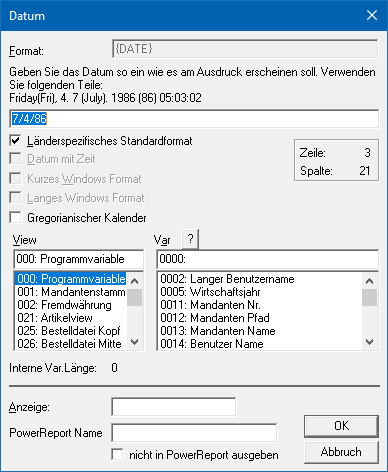

Ø Datum
Mit der Funktion "Datum" können Datumsfelder in das Formular eingefügt werden. Hierbei besteht die Möglichkeit das Format des Datums für die Ausgabe individuell zu gestalten.
Eigenschaftsfenster "Datum"
Über das Eigenschaftsfenster "Datum" können unterschiedlichste Einstellungen für ein Datum vorgenommen werden.

Ø Format
In diesem Feld wird das interne Format angezeigt, in welchem das Datum ausgegeben werden soll. Das Format selber wird dabei durch das darunterliegende Eingabefeld gesteuert. Folgende Datumsformate stehen bei der Formatierung zur Verfügung:
ü {DD} Tag mit führender Null
ü {dd} Tag ohne führende Null
ü {dddd} oder {DDDD} Tag in Worten
ü {MM} Monat mit führender Null
ü {mm} Monat ohne führende Null
ü {mmmm} oder {MMMM} Monat in Worten
ü {YY} Jahr mit führender Null
ü {yy} Jahr ohne führende Null
ü {yyyy} oder {YYYY} vierstelliges Jahr (Jahre < 10 werden als 20xx interpretiert)
ü {HH} Stunden mit führender Null
ü {hh} Stunden ohne führende Null
ü {MIN} Minuten mit führender Null
ü {min} Minuten ohne führende Null
ü {SS} Sekunden mit führender Nullen
ü {ss} Sekunden ohne führende Null
ü {DATE} länderspezifisches Standard-Datum
ü {DATETIME} länderspezifisches Standard-Datum mit Uhrzeit
ü {INTERNTL} Kurzes Windows Format
ü {LONGINTERNTL} Langes Windows Format
Ø Formateingabe
An dieser Stelle kann das Format, gemäß den Format-Varianten (siehe Feld "Format"), definiert werden. Dieses wird automatisch beim Verlassen der Formateingabe in das Feld "Format" übertragen und beim Schließen des Fensters in eine Klarschrift übersetzt.
Neben dieser Art der Eingabe kann das Format auch direkt in einer Klarschrift erfasst werden. Hierfür stehen die folgenden Elemente zur Verfügung:
ü Tuesday / Tue / 9 Format des Tags
ü 7 / July Format des Monats
ü 1996 / 96 Format des Jahres
ü 06:03:01 Format der Uhrzeit
Hinweis
Die einzelnen Elemente können durch Trennzeichen wie "Leerzeichen", "Punkt", "Komma" oder "Semikolon" voneinander getrennt werden.
Ø Länderspezifisches Standardformat
Mit dieser Option wird das Datum gemäß der Einstellung in den Ländereinstellungen angedruckt. Die Option kann nur dann aktiviert werden, wenn keine Formateingabe getätigt bzw. keine weitere Formatierungsfunktion aktiviert wurde.
Ø Datum mit Zeit
Mit dieser Option wird neben dem Datum auch die Zeit der gewünschten Variable angedruckt. Die Option kann nur dann aktiviert werden, wenn keine Formateingabe getätigt bzw. keine weitere Formatierungsfunktion aktiviert wurde.
Ø Kurzes Windows Format
Mit dieser Option wird das Datum gemäß der Einstellung "Kurzes Datum" des Windows "Datums- und Uhrzeitenformats" angedruckt. Die Option kann nur dann aktiviert werden, wenn keine Formateingabe getätigt bzw. keine weitere Formatierungsfunktion aktiviert wurde.
Ø Langes Windows Format
Mit dieser Option wird das Datum gemäß der Einstellung "Langes Datum" des Windows "Datums- und Uhrzeitenformats" angedruckt. Die Option kann nur dann aktiviert werden, wenn keine Formateingabe getätigt bzw. keine weitere Formatierungsfunktion aktiviert wurde.
Ø Gregorianischer Kalender
Wird diese Option aktiviert, dann wird der Gregorianische Kalender verwendet.
Ø View / Var
Über die Auswahllisten kann die View (d.h. die SQL-Tabelle)
und die Variable (d.h. die SQL-Spalte in einer Tabelle) bestimmt werden, welche
ausgegeben werden soll. Mit Hilfe des Icons  kann das Fenster "Variable suchen"
geöffnet werden. In diesem ist es möglich per Volltextsuche nach Variablen zu
suchen.
kann das Fenster "Variable suchen"
geöffnet werden. In diesem ist es möglich per Volltextsuche nach Variablen zu
suchen.
Hinweis
Weitere Information entnehmen Sie bitte dem Kapitel Einfügen von Variablen.
Ø Anzeige
Im Eingabefeld "Anzeige" können Informationen im Klartext hinterlegen werden um das Formular besser lesbar zu machen. Statt der Variablen wird der hier eingetragene Text auf dem Bildschirm angezeigt. Der Eintrag hat aber keinerlei Auswirkungen auf den Andruck der Variablen und wird nach dem Schließen des WinLine Formular Editors gelöscht (ist beim nächsten Aufruf nicht mehr sichtbar).
Ø PowerReport Name
An dieser Stelle kann der Name für die Anzeige innerhalb des Power Reports angepasst werden. Im Standard wird der Name der Variable übergeben.
Ø nicht in PowerReport ausgegeben
Mit Hilfe dieser Checkbox definiert werden, ob die Daten der Variable im Power Report zur Verfügung stehen sollen oder nicht.
Hinweis
Grundsätzlich werden nur Variablen aus dem Mittelteilsbereich an den Power Report übergeben.